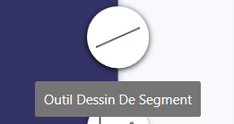

Bienvenu à la page d'aide en ligne de ToProfil
Aller directement vers :
1/ Qu'est ce que ToProfil ?
ToProfil est une application qui permet de générer des profils topographiques en se basant sur les méthodes utilisées en topographie.
Elle est conçue de façon à permettre une utilisation intuitive et donc il n'est pas demandé d'être topographe pour générer un profil topographique !
L'application vous permettra alors d'importer votre carte en courbes de niveau, de dessiner vos courbes et votre segment avec celle-ci en arrière-plan, et fera tous les calculs nécessaires de la façon la plus précise, pour permettre enfin de générer un profil avec toutes les pentes calculées.
2/ Comment utiliser ToProfil ?
1-Page d'acceuil:
Sur cette page on peut :
2-Présenation de la page de dessin
3-Le menu
3-1 L'importation:
En cliquant là-dessus on vous donne le choix d'importer une carte en arrière-plan ou de garder un arrière-plan vide .

Pour importer une image de carte en courbes de niveau à l’arrière-plan de votre page, cherchez l'image dans vos répertoires comme indiqué sur l'image.
- Vous pouvez aussi glissez l'image directement sur le plan de travail comme le montre ce gif :
3-2 La sauvegarde:
Pour laquelle il faudra tout simplement indiquer l'emplacement ou vous souhaiteriez enregistrer votre travail, il sera sous forme de fichier. tpr que vous pourrez nommer à votre guise.
-Le raccourci clavier de la sauvegarde est le (Ctrl+S).
3-3 L'aide en ligne :
Pour accéder à la page d’aide de ToProfil cliquez sur l'icône :
4-Le dessin:
Que ce soit sur un plan de travail sans fond (Carte non importée) ou avec il faudra introduire les informations nécessaires : l'échelle - l'équidispance - l’altitude minimale et maximale ; pour cela il faudra cliquer sur la flèche en haut de la page comme le montre cette illustration.
Pour un champs vide ou erroné le champs est souligné en rouge :
4-1 Comment dessiner une courbe ?
Pour dessiner une courbe l’outil dessin de courbe doit être sélectionné, soit en cliquant sur l'icône de l’outil (montré sur la photo) ou en utilisant le raccourci clavier (Ctrl+D), pour arrêter le dessin il est possible de désélectionner l’outil ou de cliquer sur un autre outil tout simplement, la fermeture de la courbe en repassant sur son premier point, ou le clic droit arrêtent eux aussi le dessin.
A la fin du dessin de la courbe, l'application vous force à introduire l’altitude de cette dernière ; le champ sera souligné en rouge si l’altitude entrée est erronée (Ne correspond pas aux paramètres de la carte).

- Le dessin des courbes étant une étape nécessitant beaucoup de précision, ToProfil met une boite à outil à la disposition de l’utilisateur.
4-2 Comment dessiner un segment ?

Pour dessiner un segment l’outil dessin de segment doit être sélectionné soit en cliquant sur l'icône de l’outil (montré sur la photo) ou en utilisant le raccourci clavier (Ctrl+L), pour arrêter le dessin il est possible de désélectionner l’outil ou de cliquer sur un autre outil tout simplement.
Il suffira juste de dessiner le segment dans le sens du profil que vous voulez observer, l’ordre du dessin des point définit le profil généré.

4-3 Problèmes de dessin :
ToProfil indique les problèmes de dessin qui empêchent la génération du profil, il y en a deux :
1/Intersection d’une courbe avec elle même :
2/Intersection entre courbes :
5-Comment voir les points d’intersection/interpolation :
Afin que l’utilisateur ait une première idée sur le profil qui sera généré, ToProfil lui offre la possibilité de voir l’altitude de ses points en cliquant sur le bouton en question, après avoir dessiné le segment (ou en utilisant le raccourci clavier Ctrl+I).
5-1 Points d’intersection :
Ce sont les points d’intersection du segment avec les courbes de niveau, chaque point aura alors l’altitude de sa courbe, pour la voir il suffit de passer la souris sur le point en question.- Dans le cas où une/les extrémité(s) ne sont pas des points d’intersection, l’application calcule leur altitude en réalisant une interpolation topographique.
5-2 Points résultants de l’interpolation :
De la même façon pour voir l’altitude d’un point déduit par interpolation il vous suffit de passer la souris sur ce point.6-Boîte à outils:
Afin d’obtenir des dessins précis, vous aurez surement besoin des fonctionnalités proposées dans la boîte à outils, pour y accéder cliquez sur son icône :
Dans cette boîte à outils vous trouverez:
1- Outil ajout de points d’ancrage à une courbe: si vous voulez ajouter un point d’ancrage à une courbe, commencez par la sélectionner, cliquez sur l’outil et choisissez l’emplacement du point.
-Il faudra désélectionner l’outil pour stopper son utilisation.
Son raccourci: Ctrl+A

Son raccourci: Suppr/Delete

-Pour couper une courbe : sélectionnez-la et cliquez sur l’outil.
Son raccourci: Ctrl+C
-Pour couper une courbe: sélectionnez la et cliquez sur l’outil .
Son raccourci: Ctrl+X

- Pour coller une courbe : sélectionnez-la et cliquez sur l’outil.
Son raccourci: Ctrl+V
6- Le zoom : pour zoomer/ dézoomer sélectionnez l’outil, un slider apparaît il vous permettra de choisir le degré de zoom. Pour vous déplacer sur l’écran : utilisez les deux scroller verticale et horizontale.
- Une autre option serait d’utiliser le raccourci (Ctrl+ (+ /-) ou Ctrl+Scroll).

Son raccourci: Ctrl+Z.
8- Redo: Annule le retour arrière (Undo), l’outil est actif dans le cas où le Undo a été appelé au moins une fois.
Son raccourci: Ctrl+Y.

6-1 Outils inactifs :
- Plusieurs fonctionnalités dont : L’ajout d’un point d’ancrage, effacer, copier et couper ne seront fonctionnelles que si une courbe est sélectionnée.
- Comme le montre l’image les outils non fonctionnels apparaissent plus clairs.
- La fonctionnalité de coller ne serait actif que si le presse papier n’est pas vide.
- Le retour en arrière ne serait fonctionnel que s’il y’a un état auquel on peut revenir.
- Et l’avance en avant ne l’est que s’il y’a eu au moins un retour arrière.
7-Génération du profil topographique :
Pour afficher le profil topographique de la surface désigné par votre segment il vous suffira de cliquer sur l'icône de génération du profil :
Voici un exemple de ce qui pourrait apparaître si aucun problème de dessin n’a été repéré :
- Si toutes les pentes ne sont pas visibles, il suffit d’utiliser le scroller au niveau de l’affichage de ces dernières.
- Pour zoomer sur le profil généré, utilisez le bouton zoom et utilisez le slider qui apparait, ou tout simplement le raccourci zoom (Ctrl+ (+/-) ) ou le scroll de votre souris (Ctrl + Scroll).

7-1 Ce qui peut empêcher la génération du profil :
ToProfil ne génère pas de profil avec des données erronées, dans ces cas, l’application indique à l’utilisateur les erreurs commises et l’utilisateur se doit d’apporter les modifications nécessaires indiquées par différents messages au moment où il tente de générer le profil. Voici les types de messages qui peuvent apparaitre :
1/ Intersection d’une ou plusieur courbe(s) entre elles :

2/ Intersection d’une ou plusieurs courbe(s) avec elle(s) même :
3/ La(les) altitude(s) d’une / quelques courbe(s) ne respectent pas les paramètres de la carte :